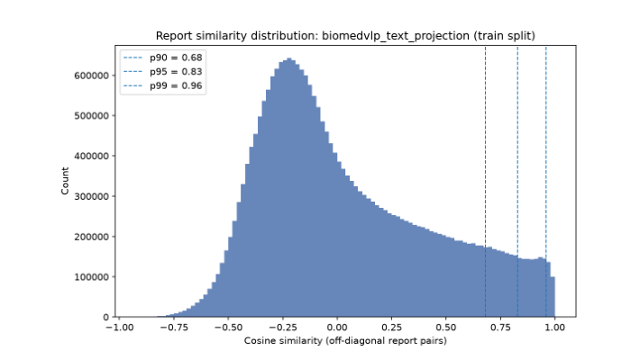
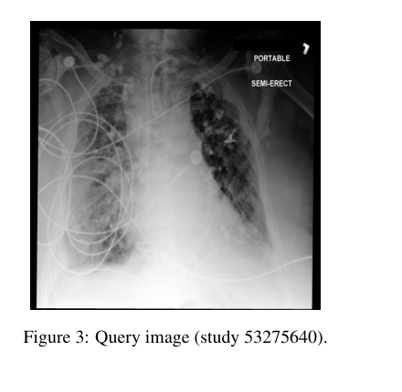
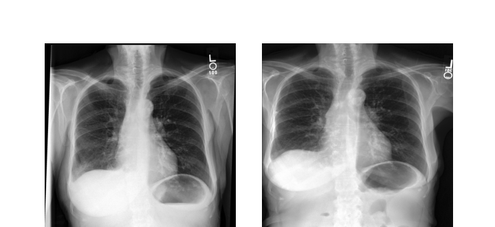

~10 minute read
We trained CLIP-style models to match chest X-rays to their radiology reports, using the MIMIC-CXR dataset. Standard CLIP training treats every non-matching image and report in a batch as a hard negative, even though two different patients' reports can describe nearly the same finding. We relaxed that assumption with a technique called Soft-CLIP: instead of only rewarding the model for its one true pairing, we also gave partial credit for retrieving reports that are semantically similar to the correct one, based on embedding similarity between reports.
This pushed Recall@1 for image-to-text retrieval from 9.66% to 11.94%, and text-to-image Recall@1 from 11.25% to 12.14%. But the more interesting result showed up when we tried to understand why the model was making certain retrievals: some of its "correct-ish" matches came from recognizing a specific patient's body, like surgical wires, rather than the actual clinical finding in the report. That's the story this post is really about.
Radiologists already do a version of this task by hand: when reading a chest X-ray, it's common to pull up a patient's prior studies, or to recall a similar case, to help interpret what's in front of them. A model that can reliably retrieve the clinically closest report for a given image — or the closest image for a given report — could support that workflow: case review, decision support, or simply building intuition from similar cases.
The dominant tool for this kind of cross-modal retrieval is CLIP (Contrastive Language-Image Pre-training). CLIP learns a shared embedding space for images and text by pulling matched pairs together and pushing every other pairing in the training batch apart. That works well when non-matches really are unrelated — a photo of a dog is unrelated to a caption about a bicycle. It works less well in radiology, where two different patients' reports might both say "moderate cardiomegaly, no acute findings," and treating those as a hard negative pair actively fights against what the model should be learning.
This isn't a new observation — SoftCLIP (Gao et al., 2023) introduced soft supervision for general vision-language training using visual-region and tag similarity, and Ko & Park (2025) built a chest X-ray-specific version that combines textual similarity, clinical-label similarity, and knowledge-graph similarity. Our project asks a narrower question: if you build soft supervision purely from report-embedding similarity — nothing else — which design choices actually move the needle?
Concretely, we replace CLIP's one-hot supervision with a hybrid loss. For every image-report pair, we still use the standard CLIP cross-entropy loss against the true match, but we add a KL-divergence term that pulls the model's retrieval distribution toward a soft target: a distribution built from how similar the true report's embedding is to every other report in the batch.
How the soft target enters training: report embeddings from an external language model define a similarity row per report, which becomes the soft target for the KL term.
Two knobs control how this behaves. First, which reports count as pseudo-positives: do we take the K most similar reports in the batch for every sample (fixed top-K), or do we take every report whose similarity clears some threshold τ (which lets the number of pseudo-positives vary per sample)? Second, how much weight the soft term gets, via β in the loss above. We also had to pick which embedding model turns report text into the vectors this whole scheme depends on.
We used MIMIC-CXR, a large public dataset of chest radiographs paired with free-text radiology reports, split into Findings and Impression sections. After removing studies with empty text and images that failed to load, we were left with 249,018 training and 2,018 validation image-report pairs. Training runs at the image level, but because a single study can include multiple X-ray views, evaluation is done at the study level, grouping all images that share a study_id.
We started from a pretrained openai/clip-vit-base-patch32 checkpoint and fine-tuned it with a study-level contrastive loss, so that multiple images from the same study count as positives for each other. Each configuration trained for up to 10 epochs (about 7 minutes per epoch on a single RTX 6000) with early stopping, and was evaluated once with a fixed random seed.
We compared three text embedding models for constructing report similarity: BioClinicalBERT (general clinical text), BiomedVLP-CXR-BERT (pretrained specifically on chest X-ray reports), and EmbeddingGemma (a general-purpose dense embedding model). Rather than training a full Soft-CLIP model for each candidate, we used a cheap proxy: the mean and spread of cosine similarity across non-identical report pairs. A model that assigns uniformly high similarity to almost everything is not useful for building a soft-positive structure — it can't tell "somewhat related" from "basically the same."
| Embedding source | Mean similarity | Std |
|---|---|---|
| BioClinicalBERT | 0.947 | 0.037 |
| EmbeddingGemma | 0.723 | 0.094 |
| BiomedVLP-CXR-BERT | 0.581 | 0.127 |
BiomedVLP-CXR-BERT gave the lowest mean and widest spread, so we used it going forward. We then compared three ways to pool its output — the CLS token, mean pooling, and its projected representation (the space it was actually trained to align with images in) — and the projected representation was the clear winner, with a mean similarity of just 0.035.
A fixed top-K treats every report the same way: always take its K nearest neighbours as pseudo-positives, whether it actually has 20 close relatives in the batch or almost none. A threshold-based approach lets that number vary — a report surrounded by similar reports gets many pseudo-positives, an unusual report gets few or none. We tested thresholds at the 90th, 95th, and 97th percentile of training similarities (τ ∈ {0.681, 0.828, 0.894}), retaining roughly the top 10%, 5%, and 3% of pairs per row.

Distribution of report-report cosine similarity on the training split (projected BiomedVLP-CXR-BERT embeddings), with the tested threshold percentiles marked.
The stricter threshold, τ = 0.894, led on almost every metric in both retrieval directions. Fixed top-K, in contrast, had no consistently best value of K — different K's won on different metrics, in different directions, without a clear pattern. The takeaway: it's not just how many pseudo-positives a report gets that matters, it's whether that number reflects how genuinely similar its neighbours are.
With the threshold-based selection settled, we swept β ∈ {0.0, 0.1, 0.3, 0.5, 0.7, 1.0}. β = 0.0 is just the hard-CLIP baseline; β = 1.0 drops the hard loss entirely and trains only on the soft KL term.
| β | I2T R@1 | I2T MRR | T2I R@1 | T2I MRR |
|---|---|---|---|---|
| 0.0 (hard baseline) | 9.66 | 0.1645 | 11.25 | 0.2005 |
| 0.1 | 10.31 | 0.1687 | 11.00 | 0.2015 |
| 0.3 | 11.94 | 0.1900 | 12.14 | 0.2225 |
| 0.5 | 11.65 | 0.1869 | 11.00 | 0.2145 |
| 0.7 | 10.65 | 0.1773 | 10.60 | 0.2073 |
| 1.0 (soft only) | 10.51 | 0.1718 | 11.45 | 0.2034 |
β = 0.3 was the clear winner in both directions. Both extremes underperformed: too little soft weight barely changes anything, and dropping the hard loss entirely (β = 1.0) removes the direct incentive to align each image with its own report, and performance suffers. Soft supervision works best as a moderate complement to the original objective, not a replacement for it.
MIMIC-CXR has a quirk that matters here: the same patient can appear multiple times, sometimes with near-identical report wording across visits. So we scored retrieval under four different definitions of a "correct" match, from strict to permissive: an exact study match, a text-identical match regardless of study, a de-duplicated version of that, and a same-patient match — crediting any retrieval from the same patient, at any visit, regardless of what the visit was actually about.
The same-patient score was dramatically higher than any study-level score — image-to-text R@1 jumped from 11.65% under the strict definition to 30.82% under the same-patient definition, nearly triple. That gap dwarfed any difference we saw between embedding models, selection strategies, or values of β in the entire project.
That's a red flag: it suggests the model can partly retrieve the right patient using visual cues that have nothing to do with the clinical content of the report. The teaser image at the top of this post is our clearest example. The query image and the retrieved report describe different findings entirely — the query mentions moderate pulmonary edema, the retrieved report describes a resolving pneumonia workup from a CT scan. But both images show the same patient's median sternotomy wires, a permanent, highly visible feature from a past cardiac surgery that has nothing to do with either finding.

A second example: the query image (portable, semi-erect view).

Two images from the same patient, different visits. Retrieval here again tracked the patient more than the finding — the retrieved report explicitly states the effusion described in the query was not present.
We checked whether this shortcut was quietly inflating our headline numbers by splitting the validation set into patients with a single study versus patients with multiple studies. Under the strict, study-level definition, there was no significant gap between the two groups. Under the same-patient definition, the gap was large and clearly significant. In other words, the shortcut is real, but it seems mostly confined to the same-patient metric itself — it doesn't appear to be quietly driving the primary results we report above. Still, it's a reminder that on datasets with repeat patients, a retrieval model's apparent "understanding" needs to be checked against more than one notion of what counts as correct, and it points to a mild patient re-identification concern worth flagging even though addressing it was outside our scope.
A few things temper how far these results should be trusted. We picked the embedding source using a proxy metric (similarity spread) rather than by training a full model for every candidate, so it's a reasonable guess rather than a guarantee. Every configuration was trained and evaluated with a single random seed, so small gaps between neighbouring settings — adjacent thresholds, adjacent K values — could partly reflect run-to-run noise rather than a real effect. And, as a first project working with medical data by two people without a clinical background, we tried to stay cautious about over-interpreting what the model is "really" doing, particularly around the patient-identity finding.
Three directions seem most worth pursuing: evaluating the embedding source end-to-end instead of via a proxy metric, repeating the sweeps across multiple seeds to separate real effects from noise, and probing the patient-identity shortcut more directly — for instance, by explicitly penalizing retrievals that rely on non-clinical visual cues like implanted hardware, rather than only measuring the effect after the fact.
The full technical report, with additional ablations and qualitative examples, is available as a PDF.
@techreport{toledano2026softclip,
title = {Soft-CLIP for Medical Imaging},
author = {Toledano, Omer and Aharon, Eliya},
institution = {Ben-Gurion University of the Negev},
note = {AI-MD Course Project},
year = {2026}
}